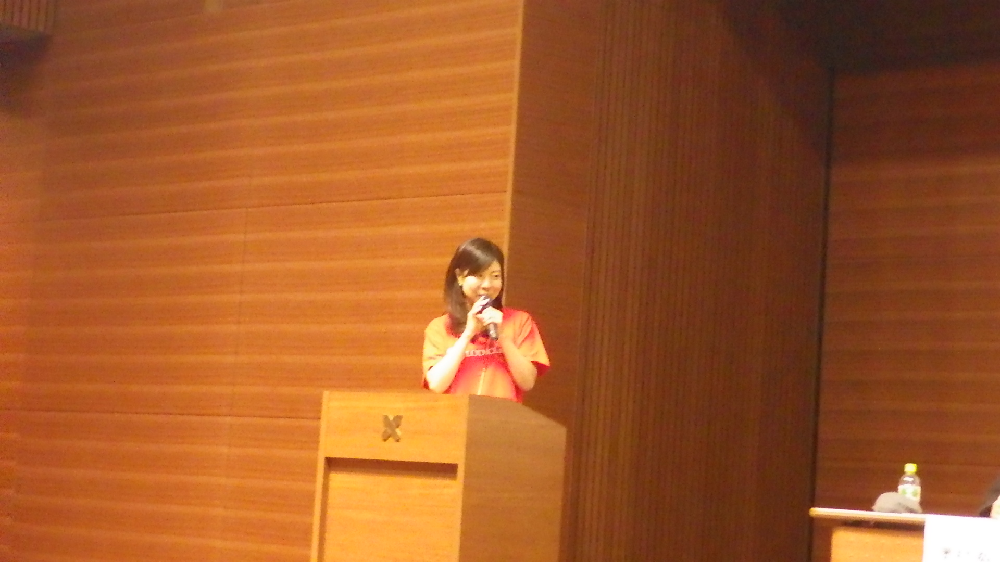

カテゴリー： ‘参加レポート’
【参加レポート】参加型オープンデータで日本を元気にするシンポジウム
2015年9月26日、慶應義塾大学三田キャンパスにて「参加型オープンデータで日本を元気にするシンポジウム」が開催されました。本イベントの様子を実行委員の生島高裕さんに寄稿していただきました。
－－－－－－－－－－－－－－－－－－－－－－－－－－－－－－－－－－－
慶応大学三田キャンパス南校舎ホールに於いて「参加型オープンデータで日本を元気にするシンポジウム」と銘打ち、LODチャレンジ2015キックオフイベントを開催致しました。 会場には150名を越える方々にお越しいただきました。

イベントは前、中に「デモ見学」を挟み、前半はLODチャレンジとスポンサーの方々のお話し、後半は招待者講演と「参加型オープンデータのためのあるべきイベント・コンテスト像とは」と言ったテーマでパネルディスカッションを行いました。
●前半
開催に先立ち実行委員長 荻野より挨拶の後、LODチャレンジ実行委員会事務局の下山よりLODチャレンジ2015の開催について説明させていただきました。
引き続き過去のLODチャレンジで受賞された方、電気通信大学大学の江上様と筑波大学の三原様より講演いただきました。
—————————————————
江上 周作（電気通信大学大学院情報システム学研究科 博士前期課程2年）
「工業分野におけるLinked Open Data活用に向けた取り組み」
三原 鉄也（筑波大学図書館情報メディア研究科 博士後期課程3年）
「POPなLinked Open Data ー “A Little and Big World -Tales of LOD” のケースより」
—————————————————
(発表順、敬称略）
お二人は、受賞後も、LODに関する研究開発を続けておられます。 江上さんは、ねじLODの外部LOD・広義概念とリンクの方法など具体的な構築方法論を進めておられます。 また、三原さんは、ビジュアル構造を表すメタデータモデル、マンガの制作プロセスのモデル化などの取り組みで、研究＆産業応用を進めておられます。 まさに若い人ならではの、新しい方向性を示していると思います。
受賞作品については下記のページで紹介しています。
・ねじLOD データセット部門最優秀賞
・A Little and Big World ? Tales of LOD LODプロモーション賞
次にプラチナスポンサーである株式会社朝日新聞社の崎川様、日本アイ・ビー・エム株式会社の石井様、日本マイクロソフト株式会社の渡辺様、NTTレゾナント株式会社の川本様、富士通株式会社の高梨様より講演していただきました。
—————————————————
崎川 真澄（株式会社朝日新聞社）
「未来メディア塾～課題の解決策を記者と参加者がともに探る」
石井 俊介（日本アイ・ビー・エム株式会社）
「超高速開発とAPIエコノミーを実現する「IBM Bluemix」のご紹介」
渡辺 弘之（日本マイクロソフト株式会社）
「インテリジェントクラウド 「Azure」のご紹介」
川本 真稔（NTTレゾナント株式会社）
「「教えて!goo」のQ&AプラットーフォームのAPIのご紹介」
高梨 益樹（富士通株式会社）
「オープンデータ活用への期待 －LOD4ALLご紹介－」
—————————————————
(発表順、敬称略）
●後半
後半では6名の有識者の方々に講演を行っていただいた後でパネルディスカッションを行っていただきました。
以下、登壇いただいた有識者の方々のお名前と講演タイトル、スライドです。 —————————————————
関本 義秀（東京大学生産技術研究所）
「地域拠点の長期的なモティベーション維持に向けたUDCの『チャレンジ』」
奥村 裕一（東京大学公共政策大学院）
「オープンデータからオープンガバメントへ～行政のパラダイムシフト」
 |
長谷川 孝（横浜市政策局政策調整担当理事）
「オープン・イノベーション 横浜の挑戦！」
神武 直彦（慶應義塾大学大学院システムデザイン・マネジメント研究科）
「地域課題を解決するためのオープンデータを用いたアイデアソン・ハッカソン・マーケソン」
栗原 聡（電気通信大学/ネットワークが創発する知能研究会/ドワンゴ人工知能研究所）
「LODと人工知能と社会との共進化」
庄司 昌彦（一般社団法人オープン・ナレッジ・ファウンデーション・ジャパン）
「Open Mind, Open Knowledge, Open Society」
 |
—————————————————
(発表順、敬称略）
ディスカッションでは「参加型オープンデータのためのあるべきイベント・コンテスト像とは」をテーマに、有識者サイドから奥村先生、庄司先生、活用者サイドから三原様、栗原先生、実務者サイドから関本先生、長谷川様、下山で議論していただきました。
「参加型オープンデータのためのあるべきイベント・コンテスト像とは」というテーマのもと、パネラー、tweetからの投稿で様々な意見が飛び交いました。
今後のオープンデータの普及には、「市民、広くはクライアント全員の参加が必要になってくる」との思いから今年度のテーマは決まりました。
また、前回の「オープンデータ・サミット」での多様なパネラーの流れを継承し、今後社会の基盤になるであろう「人工知能」、また実現しなければならない「オープンガバメント」の先生にも参加していただきました。
スタートは、奥村先生の発言、「かなり低いオープンデータ認知度」（よく知っていると回答したのは、自治体では13.7%、民に至ってはわずか回答者の2.6%）でした。コンテスト初めて５年目、「結構知名度がアップしてきて、活動が広がってきたなと」思っていた関係者にとってはガーンと冷や水を浴びせられた形になりました。
改めてデータの「説得力」、「訴求力」に関心しました。
その後、奥村先生が「社会的認知度をどう上げるか？」について、自治体業務との連携、オープンガバメントの目標を強調されました。
また、関本先生の「アーバンデータチャレンジ」は「UDC五カ年計画」を2014年に策定して計画的進めているとのことでした。
作品内容に関しましては、庄司先生の「みんなで取組むチャレンジングなテーマ」、下山事務局長の「オープンデータを趣味として楽しめる人を増やしたい」、具体的には「京都が出てくる本のデータ」、「ししょまろはんの活動」などの話がでました。
その延長で、作品評価に対して下山事務局長の「誰得性」：誰（が） 得（をするのか）の話がありました。この件は庄司先生の「質の高いスモールデータ」、そしてビッグデータ解析のポイント「ロングテール」そして、「Win」など相通じるものを感じました。
横浜市政策局の長谷川様からは、市民、行政、市議、地域紙などオープンデータを取り巻く、ステークフォルダーの発展、そして「オープンデータは無料でならなければならないわけでもない」といった、経済活動を視野に入れたイノベーション戦略の一端を話されました。
オープンデータ活用の面からお話しされた栗原先生は、AIに必要なデータ量は膨大にあることを示され、今後の機械学習、IoTの発展との関係を示されました。
また三原様は若い研究者らしく、市民運動としてのオープンデータ活動（図書館クラスタなど）を注目され、データサイエンティスト関わる研究者の意識として、スパイスを加える「（こういうデータで）こういうことができる」という枠組みを提案する立場を強調されていました。
私自身、今回のイベントでは会場の枠を越えてtweetを介し「オープンデータ」に関する議論を共有出来たことが一番の成果だったと感じます。 当日のtwitterでのつぶやきをまとめたTogetterでも当日の議論の流れ、盛り上がりが確認できます。
LODチャレンジ2015がスタートして、イベントがたくさん開催されています。2016年1月17日の締切りまで、お時間があればいくつか参加して応募してください。あなたも是非、「参加型オープンデータ」を楽しんでください！
LODチャレンジ実行委員 生島 高裕
【参加レポート】Lady’s Open Dataチャレンジデー アイディアソン
2014年12月6日に株式会社ドリコムのセミナールームにて「Lady’s Open Dataチャレンジデー アイデアソン」が開催されました。このイベントにご参加していただいた山中繭子さんに参加レポートを寄稿していただきました。
－－－－－－－－－－－－－－－－－－－－－－－－－－－－－－－－－－－
アイデアソン初参加でしたが、最初の１０分間以降はあまり緊張せずにリラックスして臨めたと思います。アイデアソンの概要や、オープンデータの具体例を詳細に説明して頂くなど、運営の方々が初心者歓迎の姿勢で出迎えて下さったからだと思います。特に、自分が出したアイデアがどう扱われるかを詳しく説明して頂けたことに私は安心しました。
出たアイデアの傾向としては、ニーズがありそうなものばかりで参加者の方々のレベルの高さを感じました。アイデアには「共感」「つっこみ」などの人との繋がりを求めるものが多く、アプリを通じて「新しいコミュニティの形成」が出来る時代になったことが特に印象に残りました。
私のアイデアもハッカソンで使われるアイデアの一つに選ばれました。予期せぬプレゼンの機会を得て楽しかったです。他のアイデア発案者の方々とはアイデアの発想点が真逆で、ターゲットも全く違いましたが、多くの方が関心を持って私のプレゼンに向かって頂けていたのですごく有り難いと思いました。
懇親会も、日頃の問題意識を共有したり、地方ごとのコミュニケーションの違いで盛り上がって楽しかったです！お食事も野菜が多くて嬉しかったですし、食事の話でも盛り上がりました。
とにかく楽しかったです！
山中 繭子
 |
本イベントの様子や生まれたアイデアはこちらから、
後日開催されたハッカソンに関しては下記からご覧いただけます。
・募集サイト
・当日の様子
・日経BP社のITProの記事にも取り上げて頂きました：
「私たちが欲しいアプリを考えました」、女性のためのオープンデータ活用ハッカソン開催
【参加レポート】オープンデータ・サミット
2014年9月27日、慶應義塾大学三田キャンパスにて「オープンデータ・サミット」が開催されました。本イベントの様子を実行委員の和田 康宏さんに寄稿していただきました。
－－－－－－－－－－－－－－－－－－－－－－－－－－－－－－－－－－－
爽やかな秋晴れの中、慶応大学三田キャンパス南校舎ホールに於いて「オープンデータサミット」と銘打ち、LODチャレンジ2014キックオフイベントを開催致しました。
会場には100名を越える方々にお越しいただきました。
イベントは「第一部：LODチャレンジキックオフ宣言」「第二部：オープンデータサミット」の二部構成で行いました。
●第一部：LODチャレンジキックオフ宣言
開催に先立ち実行委員長 荻野より挨拶の後、LODチャレンジ実行委員会事務局の乙守よりLODチャレンジ2014の開催について説明させていただきました。
引き続きLODチャレンジ2013でそれぞれアイディア部門の最優秀、優秀賞を受賞された2作品について、受賞された２チームを代表して一般社団法人オープンストリートマップ・ファウンデーション・ジャパンの木田様とライフサイエンス統合データベースセンターの山本様より講演いただきました。
—————————————————
木田 和海（一般社団法人オープンストリートマップ・ファウンデーション・ジャパン）
「足で稼ぐデータ ～『通勤情報解決プロジェクト』を例にしたOpenStreetMap 活用のポテンシャル～」
 |
山本 泰智（ライフサイエンス統合データベースセンター）
「メイド・イン「地元」～「地域愛」と「オープンデータ」を活用した地域活性化～」
—————————————————
(発表順、敬称略）
LODチャレンジ実行委員会では国内の各地で「アイディアソン」「データソン」「ハッカソン」などを開催、または共催し、様々な「Link = つながる」を広める取り組みを行っています。この「つながる」運動はデータとアプリだけに止まらず「イベント」と「イベント」、人と人の繋がりを大事にしてきました。今回発表いただいた2チームはこの「つながる」で成果をあげられ、その素晴らしさと可能性を私たちに教えてくれました。
受賞作品については下記のページで紹介しています。
・メイド・イン「地元」～「地域愛」と「オープンデータ」を活用した地域活性化～
次にプラチナスポンサーである日本マイクロソフト株式会社の大田様、株式会社朝日新聞社の崎川様より講演していただきました。
—————————————————
大田 昌幸（日本マイクロソフト株式会社）
「マイクロソフトと実現する “オープンデーターを活用した未来” 」
 |
崎川 真澄（株式会社朝日新聞社）
「データジャーナリズムハッカソンを中心とした朝日新聞“未来メディアプロジェクト”の取り組み」
—————————————————
(発表順、敬称略）
●第二部：オープンデータサミット
第2部では7名の有識者の方々に講演を行っていただいた後でパネルディスカッションを行っていただきました。
以下、登壇いただいた有識者の方々のお名前と講演タイトル、スライドです。
—————————————————
庄司 昌彦（Open Knowledge Foundation Japan）
「Open Minds to Open Action」
 |
村上 文洋（株式会社三菱総合研究所／オープンデータ流通推進コンソーシアム）
「オープンデータ流通推進コンソーシアムの活動紹介とこれからのオープンデータについて」
「オープンデータの狙い」
小俣 博司（Code for Japan／オープン川崎）
「Code for Japanの活動紹介と地域コミュニティ」
関本 義秀（東京大学生産技術研究所／アーバンデータチャレンジ東京）
「アーバンデータチャレンジ2014とサステナブルの情報流通への取組について」
竹内 聡 （福岡市役所／ビッグデータ･オープンデータ活用推進協議会）
「福岡市におけるオープンデータの活用推進に向けた取組み」
豊田 哲郎（独立行政法人理化学研究所／LODチャレンジ実行委員会）
「オープンデータと成果の官民統合データベース」
高梨 益樹（富士通株式会社／LODチャレンジ実行委員会）
「データ活用ビジネスから見たオープンデータ」
—————————————————
(発表順、敬称略）
ディスカッションでは「オープンデータを活用して目指す社会とそのために実現したいこと」をテーマに議論していただきました。会場の方々からtweetを通していただいたご意見や質問をディスカッションに反映する、という形をとり活発なやりとりが行われました。
オープンデータの推進により経済的な効果、官民が協働して公共サービスを提供する社会の実現などが見込まれる、との見通しについては
・オープンデータを活用して目指す社会を現時点で1つの方向に決めるのはまだ早い。
・まだ取組が乱立する混沌で良い。成果の事例ではなくオープンデータを公開、活用、評価のプロセスを重視すべき。
などの意見が寄せられました。
また、上記にある「プロセス(トライアル）」を推進してゆくには何が必要か？という質問に対しては
・ ハッカソン作りっぱなし問題や役立つアプリケーション作りに繋げるためにハッカソンの先に普及・ビジネス化を目指した「マーケソン」というイベントが効果を発揮するのでは？
・活用組織が多々ある中でコミュニティに参加しなければオープンデータを活用できないという状況は防ぐ必要がある。そのために、活用しやすいデータ基盤を整えることで、 まずは1人でも始められて、データを媒介して随時仲間が増えて、緩やかに繋がって行ける社会を目指したい。
などの意見が寄せられ、これからも多くの組織、参加者を巻き込んでオープンデータの活用方針や課題を共有する場を設けていくことで意見が一致しました。
私自身、今回のイベントでは会場の枠を越えてtweetを介し「オープンデータ」に関する議論を共有出来たことが一番の成果だったと感じます。
当日のtwitterでのつぶやきをまとめたTogetterでも当日の議論の流れ、盛り上がりが確認できます。
LODチャレンジ2014がスタートしました。2015年1月18日の締切りまでの間には数ヶ所でLODチャレンジデーも開催いたします。あなたも是非、「つながる」運動にご参加ください！
LODチャレンジ実行委員
和田 康宏